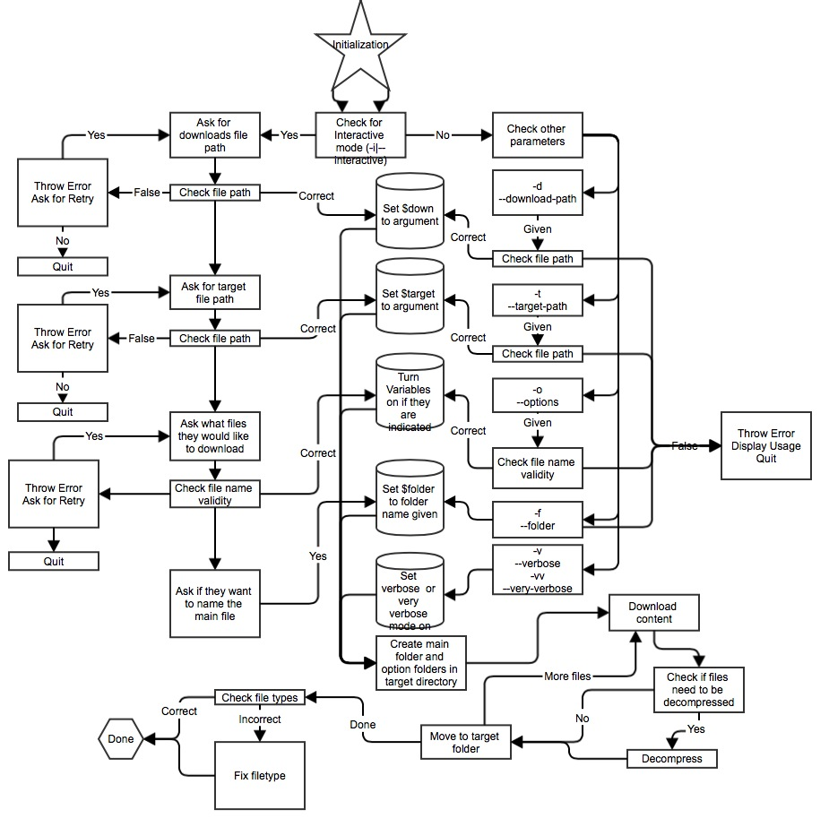

Welcome to the PhilesDownloader Project!
This project is devoted to spreading the ideology, theory, and knowledge of decades of hackers, phreakers, coders, and computer professionals. This application is planned to be a command line application written in bash script.
How it all started...
This all started with an expedition to Phrack.org. Upon visiting, I realized there was a link to download each of the individual issues. After downloading them all by hand, I realized they were all in .tar.gz format, and thus must be un-gunzipped and un-tarred. Finally I had thought I had gotten it, but yet again I was thwarted when I had realized the files had no extension (Because Linux thinks of everything as a file...). I therefore needed to write .txt to the end of all the files.
Thus this project was born. It started off just to do the task described above: download the folders from Phrack.org, un-gunzip them, un-tar them, move them to my Desktop inside a Phrack folder, and append .txt to all issues that didn't have any extension.
Maybe one day we shall move on to bigger and slightly GUI-er things, but for not this is the idea. Create an application that goes on to websites which host free information that is useful to the internet and open source community, downloads the information, and makes it available on the user's local machine.
After the big move, a server will hopefully be set up somewhere in the United States where all this data and more can be hosted. Thus making the application more stable, and easier to work with.
Ideas

Goals
- Create a command line application that will download the Phrack Magazine issues, and all the RFCs.
- Allow the user to control the download path, target path, main folder name, and the items downloaded from command line options
- Add more options of material
- Move all the information to a server which, will probably be running Ubuntu Server, Apache Web, MySQL, you know...the standard stuff.
- Create a GUI for the application, but keep command line functionality.
- Create a separate application that will update the user's files, instead of downloading them all over again.
- Read over code and design it more elegantly... maybe a new language... better code...etc.
Any Suggestions?
If you have any suggestions about what to change, how to do things, what to run not he server, how to create the GUI or anything productive; please look at the contact link.
Contact
Feel free to contact me via gitHub, or at my e-mail: smlhentschel661@gmail.com.
I don't check it as often as my school account, but I would rather not put it on here.
Copyright
MIT License (MIT)
Copyright (c) 2014 Sam-Hentschel